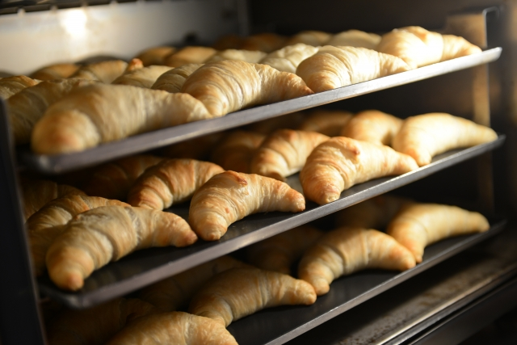

焼きたてのパン
焼きたての香りが店内に漂う！
当店では、毎朝早朝から店内で焼きたてのパンを提供しています。新鮮な材料と熟練の技術を活かして、職人が丹精込めてパンを焼き上げています。焼きたてのパンは、店内で直接お召し上がりいただけます。その香り高いパンの香りと、カリッとした食感は絶品で、一度食べたらやみつきになること間違いありません。特に朝食には最適で、店内のイートインスペースでゆっくりと召し上がっていただけます。
焼きたてのパンは、時間が経つと風味や食感が変わってしまうため、店内で提供されることで最高の状態でお楽しみいただけます。また、お店のスタッフがお客様に焼きたてのパンを提供する際には、その日のおすすめや特徴などを丁寧にご説明させていただきます。 焼きたてのパンは、店内で提供されるだけでなく、店舗外でもお持ち帰りいただけます。その場で食べるのもいいですし、家でゆっくりと楽しむのも素敵です。どちらにしても、焼きたてのパンの美味しさを存分に味わっていただけます。
当店では、焼きたてのパンを通じてお客様に最高の味わいと体験を提供することを心がけています。ぜひ、お近くにお越しの際は、店内で焼きたてのパンをお楽しみください。
購入する